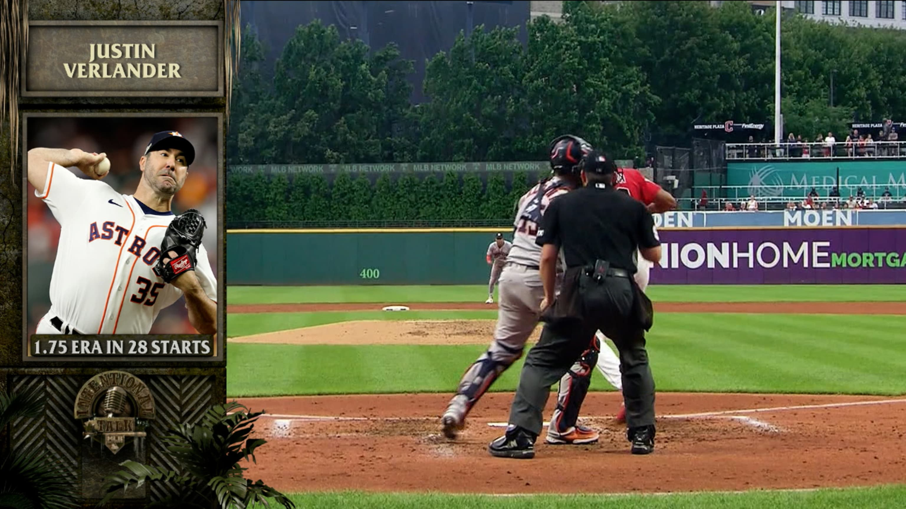

News Portal |
| NEWS WATCH SCORES SCHEDULE STATS Tickets PLAYERS |
Where will Verlander land? These teams are potential fits |
|
With the 2022 season behind us and the Hot Stove ready to burn, we're taking a close look at some of the most prominent players |
|
|  | RangersNo team will be attached to more free-agent pitchers this offseason than Texas, which made a big splash last winter with the signings of Corey Seager and Marcus Semien for a combined $500 million. The Rangers are said to be in pursuit of a bona fide ace such as Verlander, though Texas has also been attached to pitchers including deGrom, Kodai Senga and Carlos Rodón. Turns out he looked like a Cy Young winner, capturing his third career award with a superb season. |
|
One year ago, Justin Verlander hit the open market with an enormous question mark hovering over his free agency: after making just one start since the beginning of 2020 and undergoing Tommy John surgery, what would the two-time American League Cy Young Award winner look like at the age of 39? Turns out he looked like a Cy Young winner, capturing his third career award with a superb season. Verlander signed a one-year, $25 million deal with the Astros, a contract that included a $25 million player option for 2023 if he pitched at least 130 innings. The right-hander breezed by that mark, but his incredible season led him to decline the option, giving him an opportunity to test the market once again. In terms of talent, Verlander is arguably the best starting pitcher on the free-agent market. But he’ll turn 40 in February, an age when most pitchers are looking at a decline and/or retirement. Then again, Verlander might be baseball’s answer to Tom Brady, who won an MVP award at the age of 40 and Super Bowl rings at 41 and 43. |
|
Mark Feinsand, an executive reporter, originally joined MLB.com as a reporter in 2001. Follow him on Twitter @feinsand. |
|
Terms of Use
Privacy Policy
Legal Notices
Contact Us
Do Not Sell My Personal Data
|
CONNECT WITH MLB
|